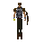
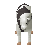

Park
Location at 3005, 3379 · Kingdom of Asgarnia
Open on the world map → Open in knowledge graph → Below: Park (underground)
NPCs
| NPC | Level | Spawns | Notable drops |
|---|---|---|---|
 Guard | 21 | 3 | Coins, Steel arrow, Iron dagger, Body talisman |
| 10 | 3 | Coins, Bronze pickaxe, Hammer, Bolt | |
| 3 | 1 | ||
 Cow | 2 | 3 | |
| 2 | 1 | Coins, Herb drop table, Bolt, Fishing bait | |
| 2 | 1 | Coins, Herb drop table, Bolt, Fishing bait | |
| 3 | |||
| 2 | |||
| shop | 1 | ||
| 3 |